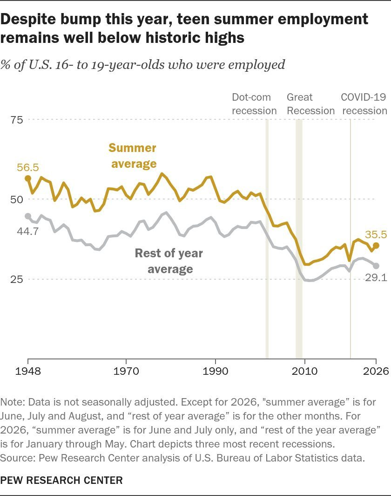
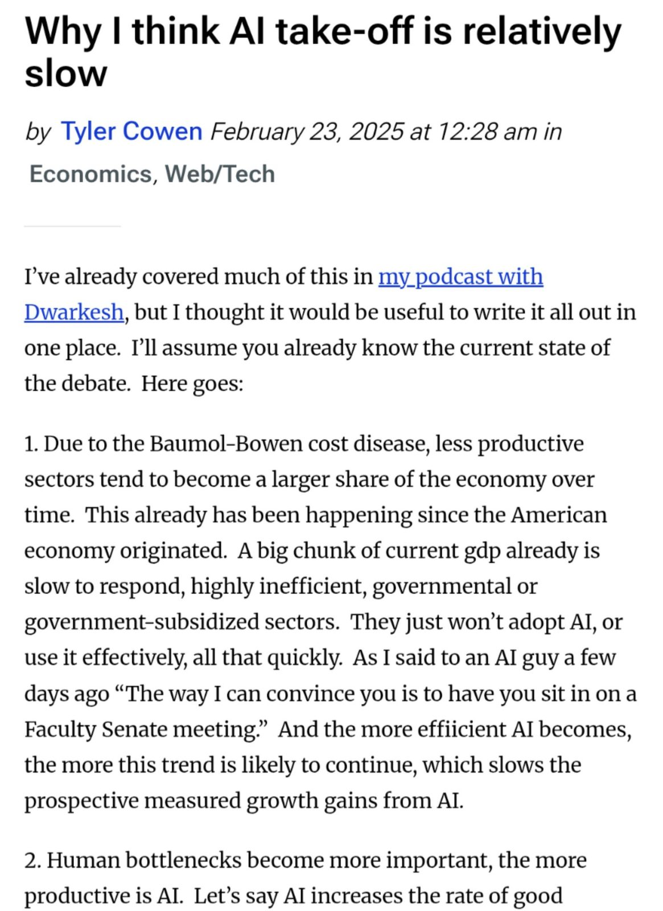
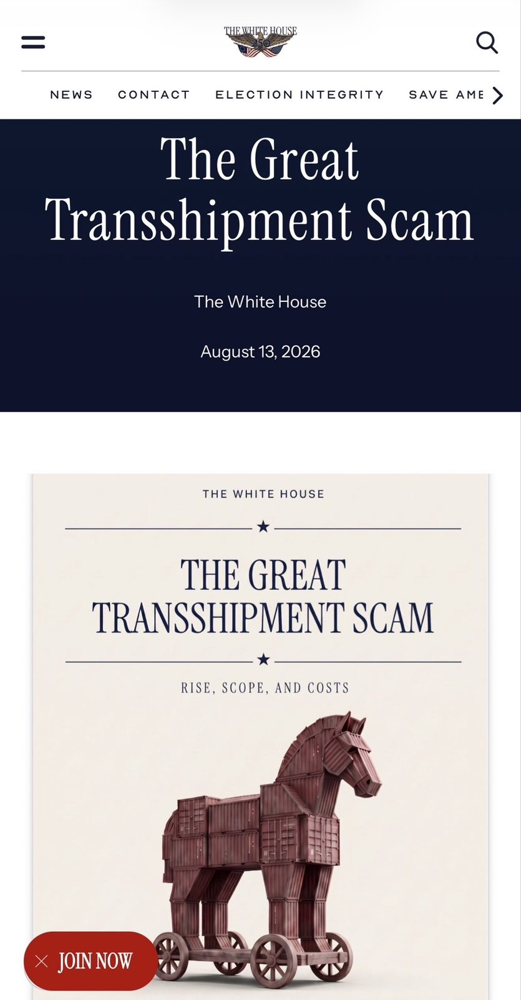

President Trump has dismantled Iran’s military capabilities, destroyed nearly 100 percent of its military factories, and buried its nuclear program. We are now entering the endgame. At dawn begins an economic D-Day — the single greatest financial offensive ever marshaled against an adversary. The Islamic Republic has subsisted by dressing extortion as security guarantees. It has drawn strength from a calculus that regards Iranian retaliation as certain and American enforcement as negotiable. Under President Trump, that era is over. And those who fear the danger of defying Tehran ought not to discount the cost of testing Washington. The President has created the conditions to leverage every agency, every authority and action many assumed we would never summon. Our objective is to sever every economic lifeline that sustains the tyrannical regime until Tehran stands alone.
🚨 Iran shut down a British power plant for four days in an unprecedented cyber attack, The Telegraph can disclose.
It is thought to be the first time that hackers affiliated to the Iranian regime have succeeded in closing down such a facility in the UK, and believed to be the most successful cyber attack of its kind ⤵️ https://www.telegraph.co.uk/news/2026/08/22/iranian-hackers-shut-down-uk-power-plant/?WT.mc_id=tmgoff_tw_post_shut-down-uk-power-plant/
US Treasury Secretary Scott Bessent on Iran:
“Now we are entering the endgame…”
“In 1943, the Allied powers convened the Tehran Conference to plot the course of an uncharted act. As Roosevelt and Churchill weighed a campaign that would culminate in the Normandy landings, they asked themselves what could be done ‘to bring the greatest pressure to bear on the enemy’.
History has returned that question to Tehran.
And the moment has arrived to answer it with the full weight of American resolve.
President Donald Trump and the overwhelming might of our military have significantly dismantled Iran’s military capabilities and weakened its nuclear programme.
Now we are entering the endgame.
At dawn begins an economic D-Day — the single greatest financial offensive ever marshalled against an adversary. For 47 years, the Islamic republic of Iran has been a malignant force in the world.
Within Iran, a corrupt regime has consigned what would be one of the world’s strongest economies to ruin and its enterprising people to repression.
President Trump has decimated Iran’s economy to a point where the rial has never been weaker and inflation has rarely been higher.
The regime’s final refuge now lies in the self-deception of fearful nations that still believe accommodating aggression can secure a durable peace.”
🚨 The grandson of Ayatollah Khomeini admits the crushing impact the U.S. blockade and war have inflicted on the Islamic Republic.
Speaking in front of Pezeshkian government officials, Hassan Khomeini acknowledged that the regime is being squeezed “from every direction,”
▶ Watch on XIRGC aligned media releases footage on how to target Presidents son Barron Trump.
For obvious reasons, I will not share the video.
Very unwise. The regime is asking for it
BREAKING: Iran announces the discovery of major gas reserves worth over $165 billion, containing more than 7.5 trillion cubic feet of "sweet" natural gas, the highest quality type with close to zero impurities, plus significant gas condensates, Iran’s oil minister told IRIB.
The field, located in southern Fars province, has recoverable gas of approximately 5.7 trillion cubic feet, equivalent to 15 years of production from one phase of the South Pars gas field, the world's largest, shared with Qatar. Iran will now accelerate planning and operations immediately to bring the field onstream as quickly as possible.
Scott Bessent: An economic D-Day is coming for Iran
“At dawn begins an economic D-Day — the single greatest financial offensive ever marshalled against an adversary.”
BREAKING: Iran declares “not a single drop of oil” will leave the Strait of Hormuz if U.S. economic pressure continues.
Sam Altman admits he was wrong on AI's timeline and says society and the economy will adapt more slowly
"I thought when we got to GPT-4, which was back in 2023, that very quickly after that there was going to be much more disruption, software businesses up for grabs right away, than it turned out to be."
"I think I was wrong about a few things, but one in terms of the speed: the economy just has so much inertia."
"People keep doing the same things, buying from the same company, wanting to use their tools the same way. I think this is actually a positive in many ways, and it's going to make this big transition go smoother and slower. I'm grateful for it."
"But it means we've all been too ambitious on timelines. Even with this incredible technology, society and the economy will adapt more slowly."
🚨 ELON MUSK WARNS:
“At most, there are about 3 years left where you can still make money selling your work.
After that, AI will do the majority of the tasks, and paying someone for their time stops making sense.
The deal of the last 200 years — your time in exchange for a salary — is ending.
And it is going to move more money between hands than anything in modern history.” https://x.com/edusoyy/status/2091244967352017074/video/1
▶ Watch on XYou're not just imagining it:
Teens actually don't work as much as they used to.
Until about 2000, a little over half of teens had summer jobs. Now, that number is only about a third. Employment in the rest of the year is way down, too:


This is the most impressive to me, more than the 100m world record.
This requires autonomous real-time planning and action in response to a fast-moving target and dynamic environment.
Galbot is one of China’s top humanoid robot startups.
The 2026 World Humanoid Robot Games have begun. 666 teams from around the world are competing with more than 2,000 humanoid robots https://t.co/8GwBuNnNn1 https://t.co/KMF1kkBiI6
▶ Watch on XWATCH: Chinese robot beats Usain Bolt's 100m world record on the opening day of the Olympics-like World Humanoid Robot Games in Beijing. Read more here: https://t.co/aHbmKfOG3h
▶ Watch on X🇨🇳BREAKING: China slashed oil imports by 5.5 MILLION barrels per day during the Iran war and single-handedly shaved $30 off global oil prices.
That is a bigger demand cut than the entire world made during COVID, except China's GDP kept growing through it, per The Economist.
Former 28-year Samsung engineer Jeon was sentenced to seven years in prison after testifying that Chinese memory maker CXMT was founded in 2016 with an explicit plan to steal Samsung's $1.2 billion DRAM technology.
In sworn court testimony in Seoul, Jeon admitted that CXMT leadership had no interest in building proprietary research facilities from scratch. Instead, the firm lured South Korean engineers with massive pay raises to siphon out Samsung's confidential Process Recipe Plan, a master blueprint detailing roughly 600 precise semiconductor manufacturing steps.
Samsung spent five years and nearly 1.6 trillion KRW developing the advanced 18nm-class process. By converting handwritten notes stolen from Samsung into local factory settings, CXMT skipped years of costly trial and error, rapidly scaling production to become the world’s fourth-largest DRAM supplier.
South Korean prosecutors emphasized that the breach inflicted trillions of won in economic damage on the country's flagship industry. Under Beijing's aggressive drive for technological self-reliance, state-backed talent poaching and trade secret theft remain central tools to bypass foreign technological lead.
One reason the Canada-US trade deal collapsed:
Canada could not promise / would not stop Chinese steel being transshipped into auto parts & then into the U.S. market.
The U.S. requires a strict “melt and pour” rule. Steel must be melted and poured in North America to qualify for preferential treatment.
This stops Chinese steel from entering Canada, getting light processing, and crossing the border as “North American” content to evade tariffs.
Recall The Canadian Steel Producers Association and Aluminium Association of Canada have both publicly confirmed Chinese dumping is happening, warning Canada risks becoming a dumping ground for China’s excess steel and aluminum.
A recent White House report on the “transshipment scam” also listed Canada as a problem country in China’s shadow network for evading U.S. tariffs.
Canada failed to deliver enforceable guarantees. Mexico accepted the melt-and-pour requirements, raised tariffs on Chinese steel and auto parts, and closed the back door.
Canada left it open and the deal fell apart.
https://www.whitehouse.gov/releases/2026/08/the-great-transshipment-scam/

Canadian oil is being taken offline for a while. This whole thing is about to meltdown SPECTACULARLY. 🛢️🇨🇦
JUST IN: Transportation Secretary Sean Duffy declares Canada “doesn't have a military.”
An unforgettable celebration of our great nation. 🇺🇸
📸 Freedom 250 Grand Prix | August 23, 2026
"WE HAVE GREEN! WE ARE RACING IN THE FREEDOM 250!" 🇺🇸🏁🇺🇸
▶ Watch on XThe USPS Published its Mail-In-Ballot Rules For the Midterm Elections...This is HUGE.
The USPS just published a new rule implementing Trump’s executive order on mail-in ballots.
States that want the Postal Service to handle their mail-in or absentee ballots must now:
-Turn over a list of every voter getting a ballot
-Put unique serialized barcodes on both the outgoing and return envelopes
If a state refuses USPS will not deliver those ballots.
A judge appointed by Obama has temporarily blocked the rule from starting. They published it anyway so it can go live the second the courts lift that block for the Midterms
USPS finalizes rule requiring states to provide voter lists for mail-in ballots
Bir Kere Girince Saatlerce Çıkamayacağınız 50 Site
1.) 'https://t.co/Li49vZ2vie' — Dünyayı canlı uydu görüntüsüyle izleme 2.) 'https://t.co/TRCKrXD8PO' — Şu an gökyüzündeki her uçağı görme 3.) 'https://t.co/CmWERZKXte' — Denizdeki tüm gemileri anlık takip 4.)
We are operating the first large scale cathode production facility in North America as part of our 4680 cell production in Austin, TX
BREAKING: US Energy Secretary says the country's oil and gas production is at an 'all-time high'
HOCHUL ENACTS NATION’S FIRST STATEWIDE DATA CENTER MORATORIUM
Globalists are waging a physical war in Ukraine to first colonize Ukraine in order to then destroy Russia to gather more resources for their own selfish interests.
Globalists are waging a cultural war in the United States to destroy the last bastion of freedom in order to gather more resources for their own selfish interests.
Stop the rise of globalism by facing up to those who are running these wars.
America First!
Hillary Clinton Reportedly Planning Bill Clinton’s Funeral as 80-Year-Old Ex-President’s Health Concerns Mount
ICE catches illegal immigrant in LA that has been deported 4 times, per Fox News.